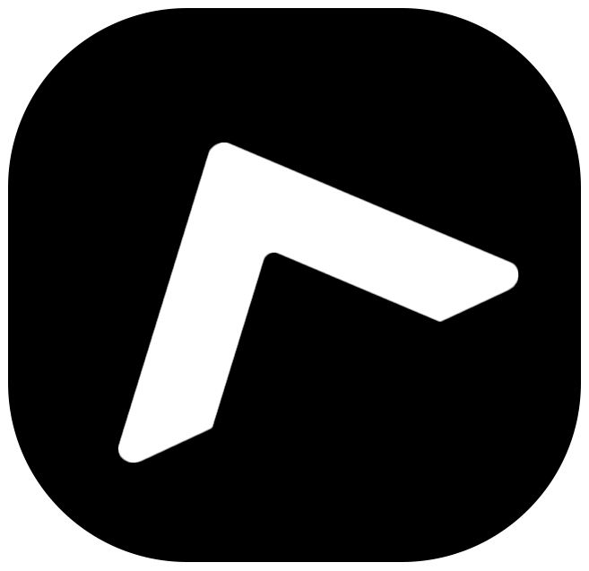

Nusantara eXtreme Development Object Model
Sebuah object model ekstrem yang lahir dari Nusantara — menyatukan pendekatan komponen, data-driven, dan rendering cepat dalam satu kerangka kerja yang modular, ringan, dan siap produksi.
© 2025 Nxdom — Terms · Privacy · GitHub